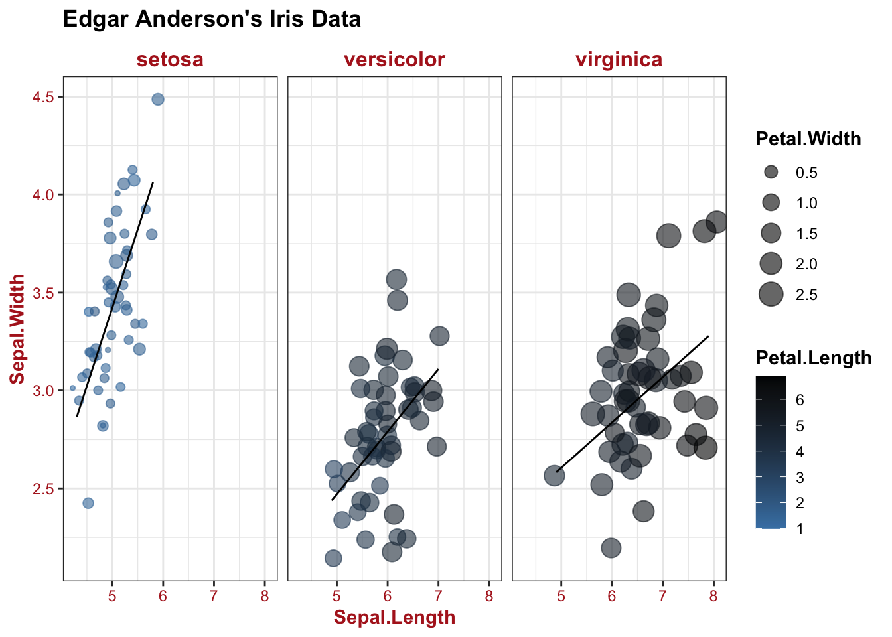

Scatterplots
1 Old Faithful Geyser
library(ggplot2)
library(ggExtra)
head(faithful)## eruptions waiting
## 1 3.600 79
## 2 1.800 54
## 3 3.333 74
## 4 2.283 62
## 5 4.533 85
## 6 2.883 55p = ggplot(faithful,
aes(x = waiting, y = eruptions)) +
geom_point(alpha = .5,
size = 3,
position = "jitter") +
theme_classic() +
theme(title = element_text(face = "bold"))
p
ggMarginal(p) # add marginal density plot2 Iris flowers
2.1 Plot 1
ggplot(iris,
aes(Sepal.Length, y = Sepal.Width, color = Species)) +
geom_count(alpha = .6) + # use point size to show data density (overcome overlaping)
theme_classic() +
labs(title = "Edgar Anderson's Iris Data") +
theme(title = element_text(face = "bold"))
2.2 Plot 2
library(ggplot2)
head(iris)## Sepal.Length Sepal.Width Petal.Length Petal.Width Species
## 1 5.1 3.5 1.4 0.2 setosa
## 2 4.9 3.0 1.4 0.2 setosa
## 3 4.7 3.2 1.3 0.2 setosa
## 4 4.6 3.1 1.5 0.2 setosa
## 5 5.0 3.6 1.4 0.2 setosa
## 6 5.4 3.9 1.7 0.4 setosaggplot(iris,
aes(x = Sepal.Length, y = Sepal.Width,
color = Petal.Length, size = Petal.Width)) +
geom_point(position = position_jitter(.2, .2), alpha = .6) + # add small random noise to dots' position to avoid overlap
geom_smooth(method = "lm", color = "black", se = F, size = .5) +
facet_wrap(~Species) + # facet based on species
# polish up
theme_bw() +
scale_color_continuous(low = "steelblue", high = "black") + # control colorbar for Petal.Length
theme(title = element_text(face = "bold"),
axis.title = element_text(color = "firebrick", face = "bold"),
axis.text = element_text(color = "firebrick"),
strip.background = element_blank(),
strip.text = element_text(face = "bold", color = "firebrick", size = 12)) +
labs(title = "Edgar Anderson's Iris Data")
3 Diamonds
library(ggplot2)
head(diamonds)## # A tibble: 6 x 10
## carat cut color clarity depth table price x y z
## <dbl> <ord> <ord> <ord> <dbl> <dbl> <int> <dbl> <dbl> <dbl>
## 1 0.23 Ideal E SI2 61.5 55 326 3.95 3.98 2.43
## 2 0.21 Premium E SI1 59.8 61 326 3.89 3.84 2.31
## 3 0.23 Good E VS1 56.9 65 327 4.05 4.07 2.31
## 4 0.290 Premium I VS2 62.4 58 334 4.2 4.23 2.63
## 5 0.31 Good J SI2 63.3 58 335 4.34 4.35 2.75
## 6 0.24 Very Good J VVS2 62.8 57 336 3.94 3.96 2.48dim(diamonds)## [1] 53940 10ggplot(diamonds,
aes(x = carat, y = price, color = cut)) +
geom_point(alpha = .4, shape = ".") + # "shape = "." and transparency set to .4 decrease overlap
geom_smooth(method = "lm", se = F, size = .6, linetype = "dashed") + # regression
# polish up
scale_color_brewer(palette = "Set1") +
theme_bw() +
theme(legend.position = c(.8, .2),
title = element_text(face = "bold")) +
coord_cartesian(xlim = c(0, 4), ylim = c(0, 20000)) + # zoom in
labs(title = "Prices of 50,000 round cut diamonds")
4 Cars
library(ggplot2)
library(ggrepel)
library(ggExtra)
p = ggplot(mtcars,
aes(x = wt, y = mpg,
color = factor(cyl), shape = factor(am))) + # use of "factor()" change cyl and am from continuous to discrete variables; particularly important since "shape" is discrete
geom_point() +
geom_smooth(aes(group = cyl), method = "lm", se = F, linetype = "dashed") + # regression line. specification of "aes(group = cyl)" ensures grouping based on cylinder (cyl) number alone; if not specified, inheriting aesthetic from above, regression is performed based on combinations of cyl and auto/manual transmission (am)
geom_text_repel(aes(label = rownames(mtcars)), size = 3) + # add car names, avoiding overlap
# polish up
theme_classic() +
theme(legend.position = c(.8, .7),
title = element_text(face = "bold")) +
stat_ellipse(aes(group = cyl), linetype = "dotted") + # add distribution ellipse
labs(x = "Weight (1000 lbs)", y = "Miles/(US) gallon")
p
ggMarginal(p, type = "density", size = 10, groupColour = T, groupFill = T, alpha = .2) # add marginal density plot
5 Mammals
library(ggplot2)
library(MASS)
ggplot(mammals,
aes(x = body, y = brain)) + geom_point() +
geom_smooth(method = "lm", fill = "firebrick", color = "firebrick", alpha = .2, size = .5) +
scale_x_log10() +
scale_y_log10() + # log transform axis
# polish up
annotation_logticks() + # add log10 marks
theme_bw() +
labs(title = "Attributes of Animals data") +
theme(title = element_text(face = "bold"))
6 New york flight
library(ggplot2)
library(dplyr)
library(RColorBrewer)
library(nycflights13)
theme_set(theme_bw() +
theme(title = element_text(colour = "black", face = "bold"),
axis.text = element_text(colour = "black", face = "bold"),
legend.text = element_text(colour = "black", face = "bold"),
legend.title = element_text(colour = "black", face = "bold")))
planes %>%
ggplot(aes(x = year, y = seats, color = engine)) +
geom_count(alpha = .4,
position = position_jitter(0, 10)) +
scale_x_continuous(breaks = seq(1960, 2010, by = 10)) +
scale_color_brewer(palette = "Dark2", "Engine type") +
scale_size(range = c(4, 14), "Dot density") +
theme(legend.position = c(.2, .7)) +
labs(title = "Plane metadata")